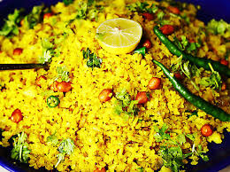
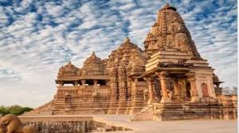

Madhya Pradesh is known as the Heart of India. It is famous for wildlife, ancient temples, tribal culture, forts and waterfalls.
Poha & Jalebi — one of the most famous morning breakfasts of India.
Khajuraho Temples are UNESCO World Heritage Sites known for stunning stone carvings.
Ujjain in Madhya Pradesh is one of the four cities that host the Kumbh Mela, the world’s largest human gathering.